Decisión Voluntaria
Explorar una necesidad o su ausencia y decidir si buscar apoyo, postergarlo o no solicitarlo. La decisión de la usuaria guía el siguiente paso.
El proceso no siempre termina cuando acaba el tratamiento. Tus emociones también importan, y no tienes que atravesar esta etapa sola.
Prueba la experiencia con datos de ejemplo.
El Desafío
Las entrevistas del equipo identificaron barreras de información, tiempo y coordinación al buscar apoyo psicológico.
PROBLEMA DE ESTUDIO
Mujeres de 50 a 59 años, usuarias de FONASA/GES de la Región Metropolitana y sostenedoras de sus hogares, presentan dificultades para acceder oportunamente a apoyo psicológico acorde con sus necesidades durante los primeros doce meses posteriores al tratamiento activo por cáncer de mama.

Explorar una necesidad o su ausencia y decidir si buscar apoyo, postergarlo o no solicitarlo. La decisión de la usuaria guía el siguiente paso.
Proponer una coordinación acompañada, con un responsable y un siguiente contacto definidos, para que la usuaria no tenga que resolver sola el acceso.
Considerar sus preferencias de canal, modalidad y horario. Si ninguna alternativa acomoda, mantener la coordinación pendiente y buscar otra opción.
Necesidades: S01 y S07. Requerimientos y alcance propuestos: S03, S04 y S11. FONASA/GES describe al público; no existe una integración institucional operativa.
La evolución del proyecto
El análisis comparativo y el pivotaje conceptual que definieron nuestro prototipo actual.
Idea inicial
Una app para reunir seguimiento clínico, salud mental, rehabilitación, orientación laboral y gestión GES. Fue una idea de partida: esas funciones e integraciones no se construyeron.
PIVOTAJE CONCEPTUAL
Enfoque aprobado
Servicio propuesto: exploración breve sin diagnóstico, decisión voluntaria, una derivación prioritaria acompañada y confirmación de acceso compatible por canales institucionales existentes. Hoy el prototipo solo simula coordinar una primera hora de apoyo psicológico: sin derivaciones ni confirmación de acceso a atención real.
Evolución conceptual comunicada por el equipo: S11. Antecedentes: S02, S08 y S10. La comparación describe decisiones de diseño; no demuestra superioridad frente a otras alternativas.
La Propuesta
Un servicio de transición propuesto para acompañar una derivación prioritaria a apoyo psicológico, a través de canales institucionales existentes.
Una conversación breve, sin diagnóstico, para reconocer lo que necesitas y decidir si quieres apoyo. Puedes avanzar, pensarlo o no solicitarlo.
La coordinación institucional propuesta gestionaría el siguiente contacto y acompañaría la derivación. La usuaria decide si acepta y comunica sus preferencias; los roles aún deben acordarse con una contraparte.
Considerar alternativas compatibles con la vida cotidiana. La demostración permite elegir correo o WhatsApp, videollamada o presencial, y pedir otro horario si ninguno acomoda.
Hoy puedes ensayar una solicitud, un mensaje, un horario y una cita de ejemplo. La exploración conversada y la gestión institucional siguen siendo parte del diseño por evaluar; no hay una institución piloto ni atención real confirmadas.
Del instrumento al recorrido
Dos niveles para explorar la misma intención: reconocer una necesidad y hacer comprensible el siguiente paso.
Prototipo 1 · Plan documentado
El plan de experimento propone una prueba de conducta en papel para explorar necesidades y decisiones de apoyo. No contamos con una fotografía ni con un registro que acredite su construcción o aplicación.
Plan de prueba, sin resultados: S05.
Prototipo 2 · Disponible para explorar
Una maqueta navegable permite solicitar apoyo, ver un mensaje de ejemplo, elegir horario y confirmar una cita simulada. También permite postergar, no solicitar apoyo o pedir otra alternativa horaria.
No recoge síntomas ni realiza la exploración conversada completa. Su funcionamiento técnico aún debe contrastarse con usuarias y operadores.
Probar la experiencia digitalDiseño sin validación con usuarias: S09.
Experiencia digital guiada
Ensaya la coordinación de una primera hora. Verás una respuesta a tu solicitud y podrás llegar hasta una cita de ejemplo.
Empecemos a tu ritmo
Prueba cómo solicitarías una primera sesión de apoyo psicológico después del tratamiento. Usaremos una identidad de ejemplo.
No necesitas escribir tu nombre, teléfono ni antecedentes de salud.
Solicitud recibida · Simulación
Así se vería el contacto del equipo de coordinación para ofrecerte una primera hora. Todavía no hay una cita reservada.
Vista previa: no se envió ningún correo ni WhatsApp.
Elige lo que te acomode
Primera sesión de apoyo psicológico . Atención con un profesional de psicología en el escenario de ejemplo.
Los horarios y la duración son ejemplos. No corresponden a cupos reales ni generan cobros.
Cita confirmada · Solo en esta simulación
En un servicio real recibirías este comprobante por el canal elegido. Aquí puedes revisar y descargar el ejemplo en PDF.
No existe una reserva real ni se ha enviado un mensaje. El comprobante es solo para la presentación.
Coordinación pendiente · Simulación
No elegiste una hora. Tu solicitud permanece pendiente; no se marca como cita confirmada.
La hora sigue pendiente. El siguiente paso corresponde a coordinación: revisar alternativas y contactarte por el canal elegido. En esta demostración no se enviará un contacto real.
Tú decides cuándo
Prototipo navegable, sin validación con usuarias. Diseño S09 y enfoque S11. Abrir la demostración en su propia página.
Antes de dar el paso
No necesitas tener todo claro para explorar el recorrido.
El proyecto se enfoca en mujeres de 50 a 59 años, usuarias de FONASA/GES en la Región Metropolitana, sostenedoras de sus hogares, durante los primeros 12 meses después del tratamiento activo por cáncer de mama. Es un foco de diseño; no existe un convenio con FONASA ni un servicio de atención operativo.
No. La demostración utiliza datos ficticios y solo pide preferencias de contacto y modalidad. No solicita síntomas, diagnósticos ni antecedentes de salud.
No. Verás un mensaje de ejemplo dentro de esta página. En el servicio propuesto, ese contacto permitiría coordinar la primera hora con un profesional de psicología.
Puedes solicitar otra alternativa. La simulación mantiene el estado “Coordinación pendiente” y explica quién debería retomar el contacto, sin confirmar una hora inexistente.
No realiza cobros ni pagos. Puedes probar las modalidades y los horarios de ejemplo para entender cómo funcionaría el agendamiento. No estás contratando ni reservando una atención real.
Evidencia y evaluación
Las entrevistas orientan el problema. La evaluación del prototipo con usuarias y operadores sigue pendiente.
Cuatro mujeres y una profesional de oncología.
Son relatos de perfiles diversos; no representan a todas las sobrevivientes ni validan este prototipo.

No hay un video de validación disponible en los materiales revisados. La experiencia de uso con usuarias aún no cuenta con un registro verificable.
Las metas del RIA son criterios de evaluación, no resultados. Antes de medirlos hay que refinar el instrumento y distinguir el recorrido simulado del acceso real a atención.
Expresar una necesidad o su ausencia y elegir de acuerdo con la preferencia declarada, sin ayuda del evaluador.
Meta: al menos 80 %
Resultado pendiente
Completar el recorrido simulado, identificar la gestión del servicio y el siguiente contacto, sin ayuda adicional del evaluador.
Meta: al menos 80 %
Resultado pendiente
Elegir una alternativa compatible con las restricciones del escenario o solicitar coordinación cuando ninguna sea viable.
Meta: al menos 80 %
Resultado pendiente
Definiciones y metas: RIA S04. No hay logros ni totales verificables para calcular porcentajes observados. Completar la simulación no demuestra acceso real ni eficacia clínica; una cita tampoco acredita atención realizada.
Lo aprendido y lo pendiente
Se mantiene el enfoque conceptual. Las próximas iteraciones buscarán refinar el instrumento y evaluar la carga operativa.
Por eso la decisión de solicitar, postergar o no buscar apoyo tiene un lugar en el recorrido.
La propuesta muestra un contacto de seguimiento y una elección de horario. Falta contrastar esa gestión con una institución.
La experiencia distingue solicitud, coordinación pendiente y cita. Una reserva no es una sesión realizada.
Hallazgos de necesidades: S01 y S07. Aprendizajes de diseño: S09, S10 y S11.
Falta medir el tiempo real de gestión del operador institucional. Aún hay que contrastar los roles, la capacidad de coordinación y la carga de trabajo con una contraparte.
Simplificar la jerarquía visual y los textos para personas que no conocen el proceso previo. La comprensión del recorrido todavía debe evaluarse con personas externas al equipo.
El equipo mantiene el servicio acotado de transición y propone refinar el instrumento, simplificar la interfaz y evaluar la carga operativa. Esta decisión de diseño no se atribuye a una validación positiva con usuarias: los resultados siguen pendientes.
Semanas relativas al inicio de la próxima iteración; no corresponden a fechas comprometidas.
| Acción | Responsables | Plazo |
|---|---|---|
| Ajuste gráfico, simplificación de textos y refinamiento web | Camilo Morales y Martina Medina | Semana 1 |
| Validación con operadores o contraparte, registro mínimo y medición de tiempos | Noèmie Barreaux y Renata Sepúlveda | Semana 2 |
| Mejoras de compatibilidad horaria y actualización del RIA | Benjamín Quiroz y Equipo E7 | Semana 3 |
Brechas, decisión y planificación comunicadas por el equipo: S11. Instrumento por revisar: S04 y S05.
Volver a la demostraciónDetrás de esta historia
Los datos de esta página provienen de registros del equipo. Compartimos una síntesis anónima y distinguimos entrevistas, decisiones y simulación.
Exploración del problema y cinco entrevistas. Septiembre de 2026; foco entonces psicológico.
Ideas de solución y estimaciones iniciales. No son mediciones de resultados.
Elección de un acompañamiento voluntario y su flujo propuesto.
Indicadores y metas. Los resultados no están completados.
Plan de prueba en papel del 6 de octubre de 2026. No es un resultado de validación.
Antecedente de julio de 2026. Su simulación corresponde a una propuesta anterior.
Ver el póster completoCinco conversaciones reales, según confirmación del equipo. Hallazgos cualitativos y perfiles diversos. Los originales se conservan privados.
Decisión histórica del 10 de octubre de 2026: derivación prioritaria a distintos apoyos. S10 acotó el recorrido a salud mental; S11 confirma el servicio de transición propuesto. Sin institución piloto confirmada.
Prototipo creado con apoyo de IA y actualizado el 14 de octubre de 2026: solicitud, mensaje, elección de horario y confirmación simulada. Aún no validado con usuarias.
Explorar la maquetaComunicado por el equipo el 14 de octubre de 2026: acotar a salud mental, mejorar la conexión visual y completar una simulación de acceso a la primera hora psicológica. Es una decisión de diseño, no una validación con usuarias. El relato actual se precisa en S11.
Especificación del equipo recibida en prompt.md el 17 de octubre de 2026: evolución desde una app integral a un servicio acotado, requisitos de diseño, brechas y decisión de iterar. La planificación es propuesta; no acredita ejecución, alianzas ni resultados de validación.
Prototipo académico. Las solicitudes, mensajes y citas son simulados. No se envían datos, no se reservan horas reales y no se presta atención de salud.